Documentación final del Simulador de Energías Renovables
Plataforma multiplataforma para crear proyectos energéticos, configurar componentes renovables y simular escenarios de generación, consumo y autosuficiencia.
Página 1Contenido de la documentación
- Introducción y descripción
- Diagramas, justificación y modelo de datos
- Requisitos de usuario
- Casos de uso
- Funcionamiento del sistema y especificaciones técnicas
- Interfaces, mockups y prototipado
- Usabilidad y accesibilidad
- Manuales
- Manual de usuario
- Manual de desarrollador
- Manual de deploy
- Tests de backend y frontend
- Pila tecnológica
- Comparación de tecnologías
- Repositorios
- Planificación
- Conclusiones y reflexiones
- Enlaces y referencias
Para entregar en PDF, abre esta página en el navegador y usa el botón de imprimir. Cada capítulo mantiene su propia página HTML y su propia hoja CSS para facilitar la refactorización por apartados.
Página 2Descripción del proyecto
El proyecto surge de la necesidad de disponer de una herramienta sencilla para estudiar instalaciones de energías renovables antes de tomar decisiones de diseño. En un contexto donde la eficiencia energética y el autoconsumo tienen cada vez más importancia, el sistema permite representar componentes, configurar consumos y consultar resultados de simulación sin depender de hojas de cálculo externas.
La solución se desarrolla como proyecto intermodular de 2º DAM en el IES El Rincón. Está pensada para una empresa o equipo técnico que quiera evaluar proyectos de energía renovable, presentar escenarios a clientes y mantener un catálogo básico de generadores, baterías y elementos consumidores.
La idea principal es construir una plataforma compuesta por backend, aplicación web y aplicación Android. La web ofrece el entorno más completo para crear proyectos y simular diagramas; la app móvil acerca las funciones principales a técnicos o usuarios que necesiten consultar proyectos desde un dispositivo Android; el backend centraliza la autenticación, los datos persistentes y el cálculo de simulaciones.
React, Vite, diagramas y paneles de administración.
Spring Boot, API REST, seguridad JWT y PostgreSQL.
Android nativo en Java conectado a la misma API.
Entidades principales y justificación
El simulador se apoya en un modelo centrado en proyectos. Cada usuario crea escenarios energéticos, añade elementos del catálogo al lienzo y ejecuta simulaciones con datos meteorológicos. El backend persiste estas estructuras con JPA y PostgreSQL.
| Entidad | Responsabilidad |
|---|---|
| User | Usuarios registrados, credenciales y rol de administración. |
| Project | Escenario energético con nombre, propietario, localización, fecha, inclinación, azimut, duración y resultados resumidos. |
| Element | Entidad base del catálogo con nombre, categoría, descripción e imagen. |
| GeneratorElement | Paneles o generadores con marca, área, eficiencia y potencia nominal. |
| ConsumerElement | Cargas de consumo con potencia base, pico y perfil. |
| BatteryElement | Sistemas de almacenamiento con capacidad y límites de carga/descarga. |
| ProjectNode | Instancia de un elemento dentro de un proyecto, con posición, cantidad y configuración. |
| ProjectNodeConnection | Relación entre nodos del diagrama. |
| SimulationRun | Ejecución de simulación con métricas globales. |
| SimulationPoint | Resultado horario de generación, consumo, balance, irradiancia y nubosidad. |
Separar catálogo y nodos evita duplicar datos técnicos: un mismo panel o consumidor puede reutilizarse en varios proyectos, mientras cada nodo guarda su posición y configuración propia. Las conexiones preparan el sistema para ampliar el cálculo energético por ramas, redes o pérdidas específicas.
Página 4Diagramas propuestos
Mapa conceptual
Usuario -> Proyecto -> Diagrama -> Nodos -> Elementos
Proyecto -> Simulación -> Open-Meteo -> Resultados horarios
Elementos -> Generadores | Consumidores | BateríasEntidad / relación resumido
USERS 1--N PROJECTS
PROJECTS 1--N PROJECT_NODES
ELEMENTS 1--N PROJECT_NODES
PROJECTS 1--N PROJECT_NODE_CONNECTIONS
PROJECTS 1--N SIMULATION_RUNS
SIMULATION_RUNS 1--N SIMULATION_POINTS
ELEMENTS 1--1 GENERATOR_ELEMENTS / CONSUMER_ELEMENTS / BATTERY_ELEMENTSFlujo de simulación
- El usuario configura el proyecto desde web o Android.
- La aplicación envía proyectos, nodos y conexiones al backend.
- El backend recupera datos meteorológicos mediante Open-Meteo.
- El servicio calcula generación, consumo, déficit, excedente y autosuficiencia.
- Los resultados se guardan y se devuelven a la interfaz.
Requisitos generales del sistema
El objetivo principal es definir una solución que permita gestionar proyectos energéticos renovables y simular si una configuración cubre la demanda prevista. Los requisitos se organizan en funcionales, no funcionales y de información.
Funcionales
- Registrar e iniciar sesión de usuarios.
- Gestionar proyectos propios.
- Crear diagramas con generadores, consumidores y baterías.
- Guardar posición, cantidad y configuración de cada nodo.
- Ejecutar simulaciones energéticas por proyecto.
- Consultar métricas de generación, consumo, déficit y excedente.
- Administrar usuarios y elementos del catálogo.
- Acceder desde aplicación web y Android.
No funcionales
- API REST clara y reutilizable.
- Persistencia relacional con PostgreSQL.
- Autenticación mediante token JWT.
- Interfaz responsive para escritorio y móvil.
- Pruebas automatizadas en backend y frontend.
- Despliegue preparado para entorno local y producción.
- Mensajes de error comprensibles.
- Separación entre presentación, lógica y datos.
Requisitos de información
El sistema debe conservar usuarios, proyectos, catálogo de elementos, nodos del diagrama, conexiones, parámetros de simulación y resultados históricos. También debe mantener la trazabilidad de cada simulación para que los resultados puedan relacionarse con la configuración usada.
Página 6Versión inicial
| Código | Actor | Descripción | Resultado esperado |
|---|---|---|---|
| CU-01 | Usuario | Registrarse e iniciar sesión. | Acceso a proyectos propios con token válido. |
| CU-02 | Usuario | Crear, editar y eliminar proyectos. | Proyecto persistido y visible en web/móvil. |
| CU-03 | Usuario | Añadir elementos al simulador. | Nodos colocados en el lienzo con cantidad y posición. |
| CU-04 | Usuario | Conectar nodos del diagrama. | Relaciones guardadas para representar el sistema energético. |
| CU-05 | Usuario | Ejecutar simulación. | Resultados de producción, consumo, déficit, excedente y autosuficiencia. |
| CU-06 | Administrador | Gestionar usuarios. | Consulta y administración de cuentas registradas. |
| CU-07 | Administrador | Gestionar catálogo de elementos. | Altas, bajas y cambios en generadores, consumidores y baterías. |
| CU-08 | Técnico | Instalar y configurar la aplicación en cliente. | Sistema operativo en el entorno de destino. |
Estos casos de uso son iniciales. Durante la evolución del proyecto pueden desglosarse en casos detallados con precondiciones, flujo normal, alternativas y errores.
Página 7Funcionamiento y especificaciones técnicas
El sistema se organiza como un monorepo con tres superficies principales. La aplicación web y la app Android consumen la misma API REST. El backend se encarga de seguridad, persistencia, reglas de negocio y simulación.
React/Vite Web --------\
-> Spring Boot API -> PostgreSQL
Android Java ----------/ |
-> Open-MeteoServidor
Spring Boot expone endpoints bajo /api para usuarios, proyectos, elementos, nodos,
conexiones y simulaciones. Usa Spring Security, JPA y PostgreSQL.
Web
La SPA en React gestiona rutas públicas, rutas protegidas, panel de proyectos, simulador visual y administración.
Android
La app nativa en Java reutiliza la API para login, proyectos, perfil y acceso al simulador.
Relación entre capas
- La interfaz recoge acciones del usuario y construye peticiones JSON.
- La API valida y persiste los datos mediante repositorios JPA.
- El servicio de simulación obtiene información meteorológica y calcula balances energéticos.
- El cliente muestra métricas y permite guardar cambios del proyecto.
Endpoints destacados
POST /api/users/login: autenticación de usuario.GET /api/projects/user/{userId}: proyectos asociados a un usuario.PUT /api/projects/{id}: actualización de proyecto, nodos y conexiones.GET /api/elements: catálogo energético.POST /api/projects/{projectId}/simulations: ejecución de simulación.GET /api/projects/{projectId}/simulations/latest: última simulación guardada.
Diseño inicial, mockups y prototipado
El prototipado debe recoger tanto la aplicación web como la móvil. La web prioriza el trabajo con proyectos y diagramas; la app móvil prioriza consulta, autenticación, perfil y acceso a proyectos desde un dispositivo Android.
Enlace del prototipo: pendiente de añadir el enlace compartido de Figma, Penpot, Canva o la herramienta usada.
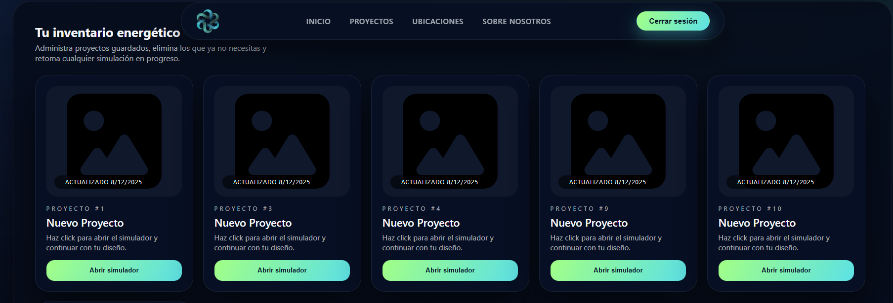
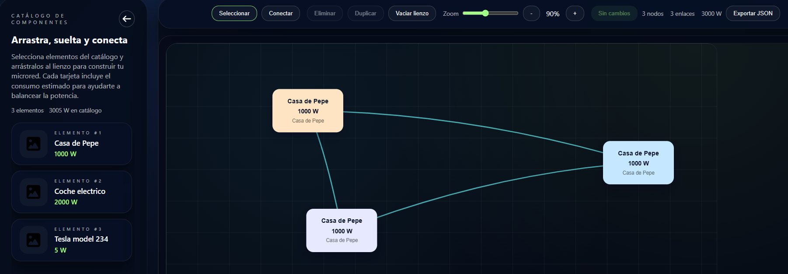
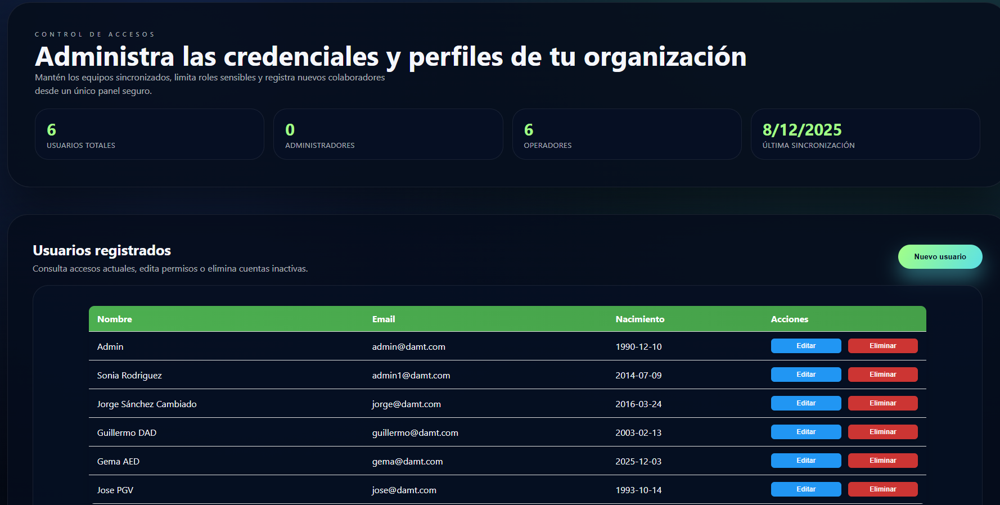
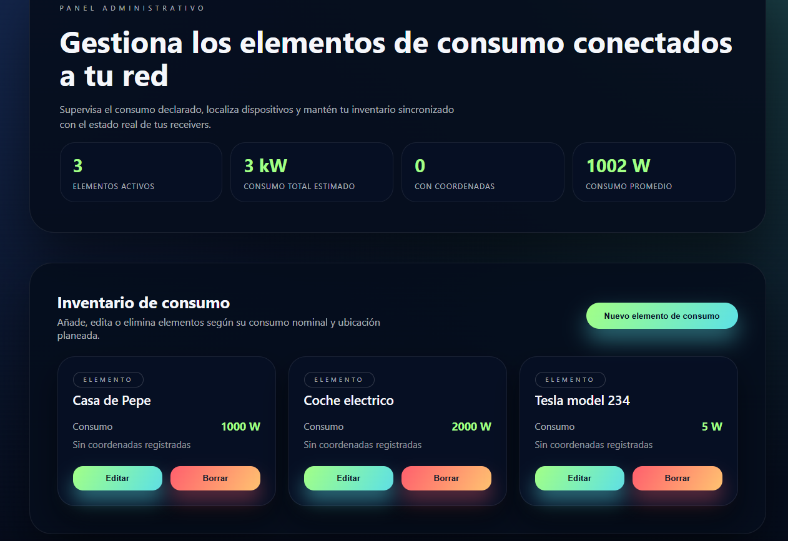
Capturas recuperadas de la documentación anterior
Las siguientes imágenes proceden del documento deprecado y sirven para documentar estados adicionales de la interfaz: inicio, login, inventario, simulador y administración.
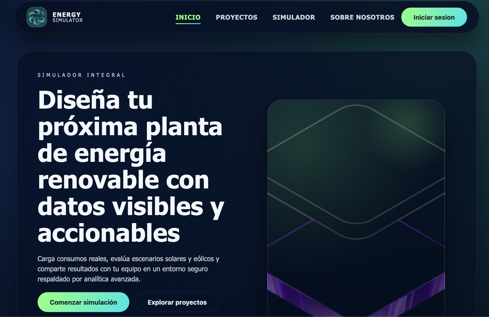
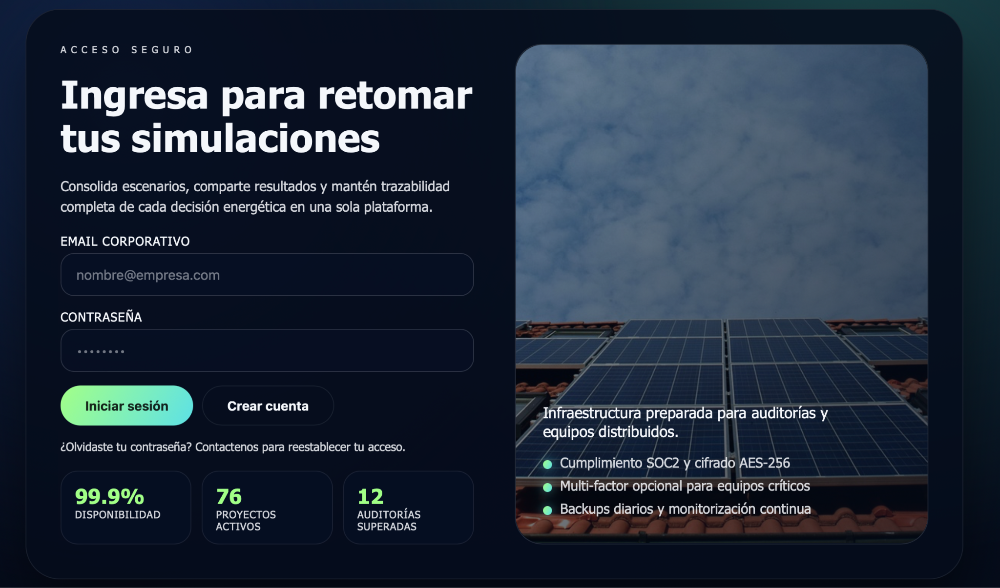
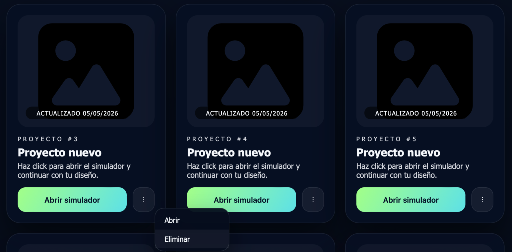
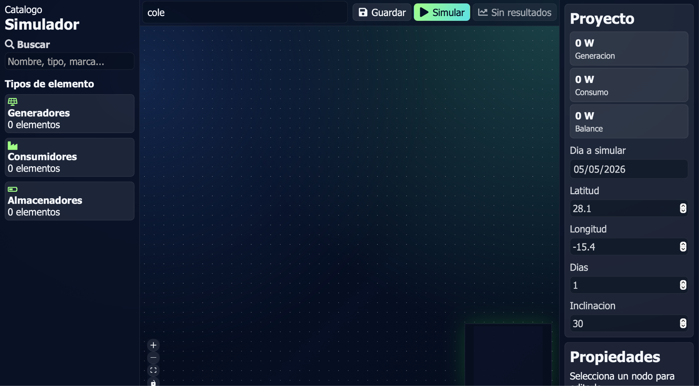
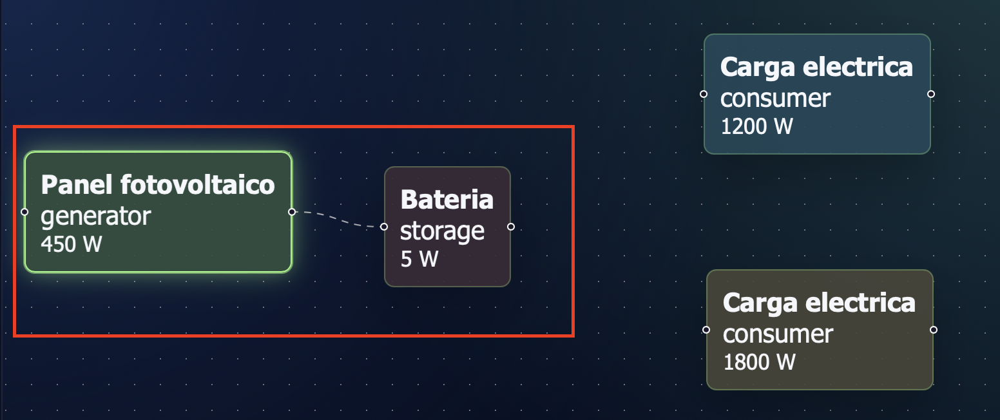
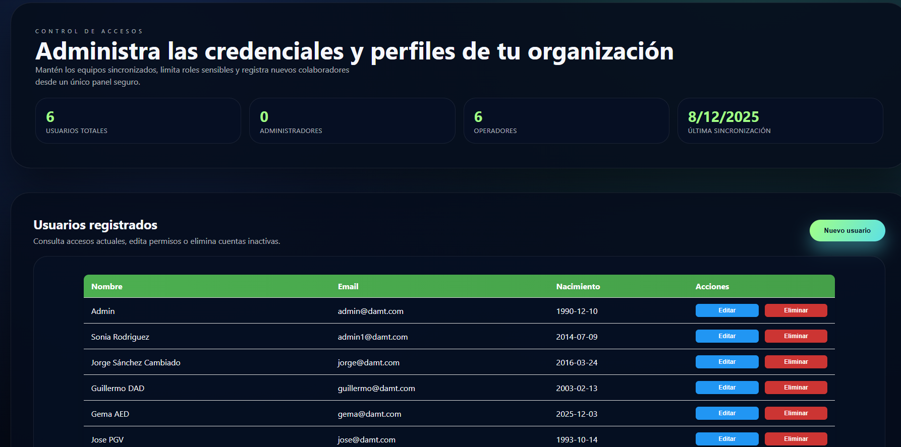
Mockups mínimos a incluir
- Web: login, registro, listado de proyectos, simulador, perfil y administración.
- Android: login, listado de proyectos, detalle/simulador, perfil y ayuda.
- Estados: carga, error de conexión, usuario sin proyectos y confirmación de borrado.
Criterios aplicados
| Aspecto | Decisión de diseño | Justificación |
|---|---|---|
| Claridad | Textos breves, botones reconocibles y agrupación por tareas. | El usuario debe saber qué hacer sin leer instrucciones largas. |
| Consistencia | Mismo patrón de navegación en web y móvil. | Reduce aprendizaje y errores al cambiar de dispositivo. |
| Feedback | Estados de carga, errores y resultados visibles. | Evita incertidumbre durante peticiones a la API. |
| Prevención de errores | Confirmaciones en acciones destructivas y validación de formularios. | Protege proyectos y datos de usuario. |
| Accesibilidad | Contraste suficiente, etiquetas, foco visible y estructura semántica. | Facilita uso con teclado y tecnologías de apoyo. |
Proceso seguido
- Identificación de perfiles: usuario final, técnico instalador y administrador.
- Definición de tareas frecuentes: login, crear proyecto, simular y consultar resultados.
- Diseño de pantallas con jerarquía visual y flujo corto.
- Validación mediante pruebas manuales y tests automatizados de flujos críticos.
- Revisión posterior con capturas reales de la aplicación.
Evidencias en la aplicación
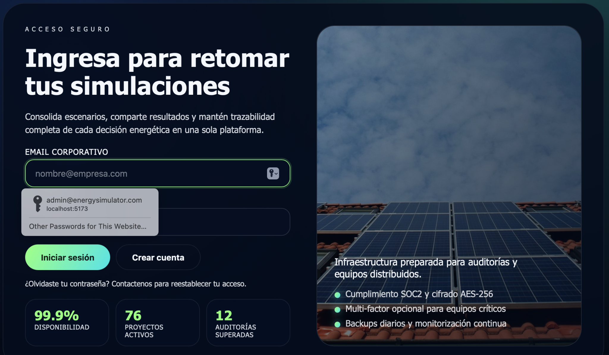
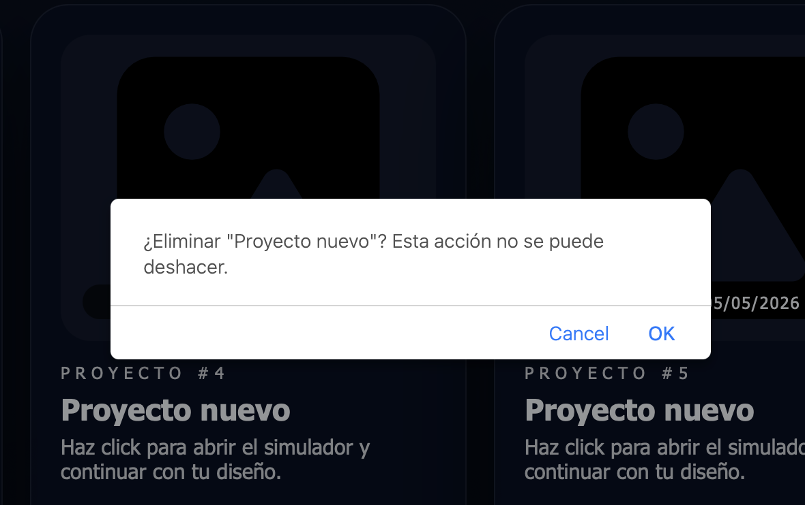
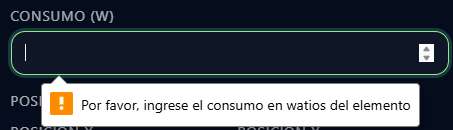
Estas capturas recuperadas muestran decisiones ya aplicadas: mensajes visibles, confirmación antes de borrar y validaciones cercanas al campo afectado.
Página 10Manuales del proyecto
Este apartado se divide en tres documentos independientes para separar las necesidades de cada perfil: la persona usuaria, el equipo de desarrollo y la persona responsable del despliegue.
La separación ayuda a entregar una documentación más clara: quien usa la aplicación no necesita leer comandos técnicos, y quien despliega no tiene que buscar instrucciones entre pantallas de usuario.
Página 11Uso de la aplicación
Este manual está dirigido a la persona que utilizará el simulador para crear proyectos energéticos, configurar componentes renovables y consultar resultados.
Inicio de sesión y registro
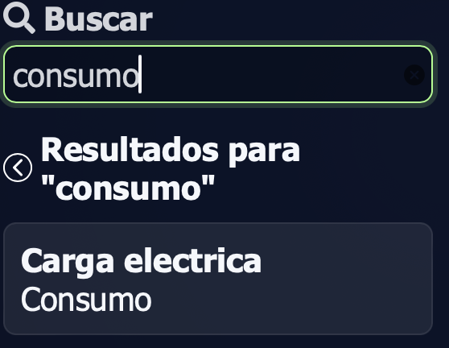
- Accede a la pantalla de login.
- Introduce correo electrónico y contraseña.
- Si todavía no tienes cuenta, abre la pantalla de registro y completa los datos obligatorios.
- Tras iniciar sesión, la aplicación carga tus proyectos o muestra un estado vacío si aún no existen.
Gestión de proyectos
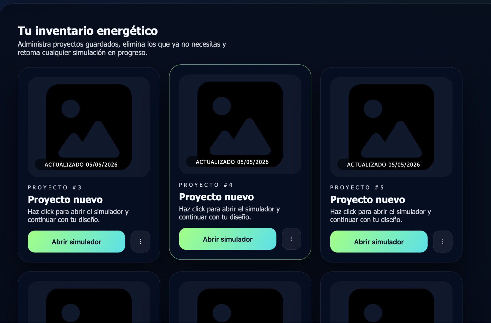
- Entra en el panel de proyectos.
- Crea un proyecto nuevo con un nombre reconocible.
- Abre un proyecto existente para editarlo en el simulador.
- Usa las acciones de la tarjeta para eliminar o modificar proyectos cuando corresponda.
Simulador energético
- Añade generadores, consumidores y baterías desde el catálogo.
- Organiza los elementos en el lienzo de trabajo.
- Configura cantidad, consumo, generación o almacenamiento según el tipo de elemento.
- Define localización, fecha, inclinación, azimut, duración y pérdidas del sistema.
- Ejecuta la simulación y revisa generación, consumo, déficit, excedente y autosuficiencia.
- Guarda el proyecto para recuperarlo desde la web o desde la app Android.
Perfil y administración
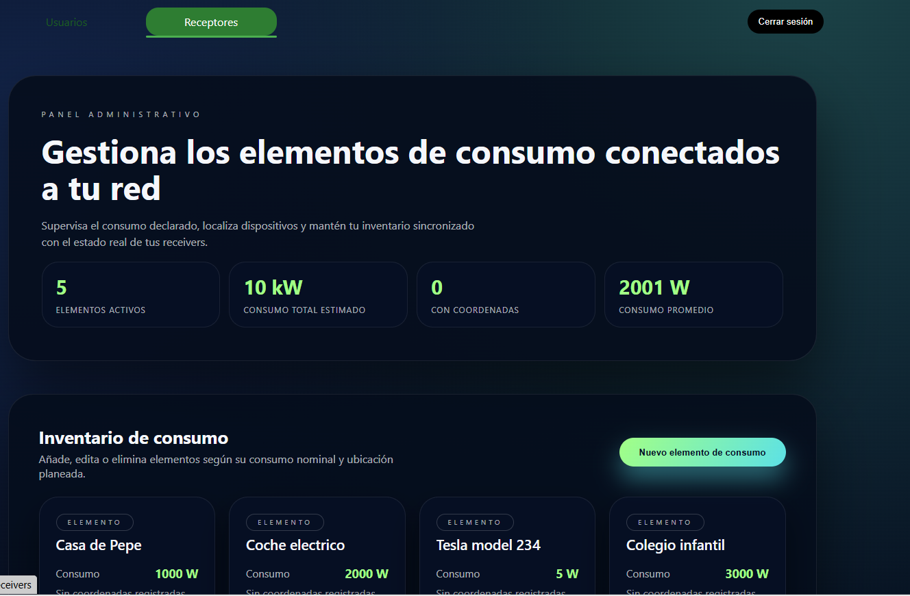
Desde el perfil se consulta o modifica la información de la cuenta. Las pantallas de administración solo están disponibles para usuarios con rol administrador y permiten gestionar usuarios y elementos del catálogo.
Ayuda dentro de la app
La ayuda debe explicar el significado de cada métrica, cómo interpretar déficit y excedente, qué hacer cuando no aparecen proyectos y cómo corregir una configuración insuficiente.
Problemas frecuentes
- Si no aparecen proyectos, revisa que has iniciado sesión con la cuenta correcta.
- Si no puedes simular, comprueba que el proyecto tiene elementos suficientes.
- Si no accedes a administración, verifica que tu usuario tiene rol administrador.
Entorno local y trabajo técnico
Requisitos previos
- Git para clonar el repositorio.
- JDK 25 para el backend.
- PostgreSQL para la base de datos local.
- Node.js y npm para los frontends React/Vite.
- Android Studio y Android SDK para compilar la app móvil.
Clonar el repositorio
git clone https://github.com/YarCrasy/RenewableEnergyProject.git
cd RenewableEnergyProjectBackend
cd backend
./gradlew bootRun
./gradlew test
./gradlew buildEn Windows usa .\gradlew.bat bootRun, .\gradlew.bat test y
.\gradlew.bat build. El backend expone la API bajo http://localhost:8080/api.
Frontend web
cd web-refactored
npm install
npm run dev
npm run build
npm run lint
npm run test
npm run test:watchLa variable opcional VITE_API_URL permite cambiar la URL del backend. Si no existe, el frontend
usa http://localhost:8080/api en desarrollo.
Android
cd Android
./gradlew assembleDebugEn Windows usa .\gradlew.bat assembleDebug. Para pruebas manuales, abre la carpeta
Android/ con Android Studio y revisa las URL de BuildConfig.
Estructura del repositorio
| Carpeta | Responsabilidad |
|---|---|
backend/ |
API REST, seguridad, modelo de datos y simulaciones. |
web-refactored/ |
Frontend actual con React, TypeScript, Vite y simulador visual. |
Web/ |
Versión web previa y documentación técnica por módulos. |
Android/ |
Aplicación móvil nativa en Java. |
DocumentationWeb/ |
Documentación final exportable a PDF. |
Flujo recomendado
- Arrancar PostgreSQL.
- Ejecutar el backend.
- Ejecutar el frontend.
- Desarrollar cambios pequeños y probarlos.
- Ejecutar tests antes de entregar.
Despliegue de la aplicación
Este manual está dirigido a la persona técnica que instala la solución en el entorno del cliente o en producción. El proyecto contempla backend, frontend web, base de datos y APK Android.
Preparación de base de datos
- Instalar PostgreSQL y crear la base
energysimulatordb. - Crear el usuario de aplicación o adaptar
backend/InitBD.sql. - Configurar credenciales fuera del repositorio cuando el entorno sea producción.
- Verificar que el backend puede conectarse antes de publicar la web.
Configuración backend
spring.datasource.url=jdbc:postgresql://localhost:5432/energysimulatordb
spring.datasource.username=SimulatorUser
spring.datasource.password=SimulatorUserPassword123
app.jwt.secret=change-this-secret-key-before-productionEl secreto JWT y las credenciales no deben mantenerse con valores de desarrollo en producción. También conviene ajustar CORS a los dominios reales del cliente.
Build del backend
cd backend
./gradlew buildDespués del build, el artefacto se puede ejecutar como servicio Java en el servidor elegido. En el README se documenta un despliegue sobre Raspberry Pi 5.
Build de la web
cd web-refactored
npm install
npm run buildAntes de construir, define VITE_API_URL apuntando a la API pública, por ejemplo
https://dam.yarcrasy.com/api. Los archivos generados se sirven como estáticos desde el servidor
web.
Deploy Android
cd Android
./gradlew assembleDebugPara release, Android usa https://dam.yarcrasy.com/api/ como backend y
https://dam-project.yarcrasy.com como web base. Se debe generar y distribuir el APK o bundle
firmado según el canal elegido.
Verificación posterior
- Comprobar que la API responde bajo
/api. - Iniciar sesión desde la web.
- Crear un proyecto de prueba.
- Añadir elementos al simulador y guardar.
- Ejecutar una simulación y validar resultados.
- Probar la conexión desde Android.
Tests de prueba
Backend
El backend usa JUnit Platform y dependencias de testing de Spring Boot.
cd backend
./gradlew test- Arranque del contexto Spring.
- Validación de utilidades de seguridad JWT.
- Pruebas ampliables para controladores y servicios.
Frontend
La web usa Vitest, Testing Library y jsdom.
cd web-refactored
npm run test
npm run test:watch- Flujos de login y autenticación.
- CRUD de proyectos y elementos con mocks de API.
- Comportamiento de tarjetas, rutas privadas y utilidades del simulador.
Criterio de aceptación
Las pruebas deben cubrir los flujos críticos: autenticación, creación de proyectos, actualización de diagramas, ejecución de simulación y errores de API. Para nuevas funcionalidades, se recomienda seguir el patrón AAA: preparar datos, ejecutar acción y comprobar resultado.
Áreas revisadas en el repositorio
- Autenticación: login, logout, hidratación de sesión, roles y sanitización de datos guardados.
- Rutas privadas: redirección a login y control de acceso por rol.
- APIs: CRUD de proyectos, elementos y ejecución de simulaciones.
- Interfaz: tarjetas de proyecto, menús contextuales, formularios y estados vacíos.
- Simulador: normalización de proyectos, coordenadas, nodos, conexiones y payloads.
Pila tecnológica
| Capa | Tecnologías | Uso |
|---|---|---|
| Backend | Java 25, Spring Boot 4, Spring Security, Spring Data JPA, Gradle | API REST, seguridad, persistencia y simulación. |
| Base de datos | PostgreSQL | Datos relacionales del sistema. |
| Web | React 19, TypeScript, Vite 8, React Router, Axios, React Leaflet, D3, @xyflow/react | SPA, mapas, diagramas, llamadas API y visualización. |
| Android | Java, Android SDK 26+, AppCompat, Material, ConstraintLayout | Aplicación móvil nativa. |
| Pruebas | JUnit, Spring Test, Vitest, Testing Library, jsdom | Validación automatizada de backend y frontend. |
| ERP auxiliar | Odoo 19, Docker Compose, PostgreSQL 15 | Entorno independiente para posibles necesidades de gestión empresarial. |
| Despliegue | Raspberry Pi 5, dominio dam-project.yarcrasy.com, builds web y APK | Entorno de producción y distribución. |
Comparación de tecnologías
| Decisión | Alternativas | Motivo de elección |
|---|---|---|
| Spring Boot | Node/Express, Laravel | Encaja con Java, JPA, seguridad integrada y estructura clara para API REST. |
| PostgreSQL | MySQL, SQLite | Base relacional robusta, adecuada para relaciones entre proyectos, nodos y simulaciones. |
| React + Vite | Angular, Vue | Desarrollo rápido, ecosistema amplio y buen soporte para componentes de diagramas. |
| Android nativo Java | Kotlin, React Native, Flutter | Aprovecha conocimientos del ciclo y mantiene integración directa con SDK Android. |
| Axios | fetch nativo | Centraliza base URL, cabeceras, interceptores y gestión de errores. |
| @xyflow/react | Canvas propio, SVG manual | Ofrece nodos y conexiones listas para un simulador visual mantenible. |
| Docker Compose para Odoo | Instalación manual, contenedores separados | Permite levantar Odoo y PostgreSQL de forma reproducible y aislada. |
Organización del repositorio
El proyecto se mantiene como monorepo para coordinar backend, web, Android, despliegue y documentación desde un único punto.
| Carpeta | Contenido |
|---|---|
backend/ |
API Spring Boot, modelos, controladores, servicios, repositorios, seguridad y tests. |
web-refactored/ |
Aplicación web actual en React, TypeScript y Vite. |
Web/ |
Versión anterior o base de la web, con componentes y documentación técnica por módulos. |
Android/ |
Aplicación Android nativa. |
screenshots/ |
Capturas usadas en README y documentación. |
DocumentationWeb/ |
Documentación final navegable y preparada para exportar a PDF. |
odoo/ |
Configuración auxiliar de docker-compose. |
Repositorio remoto: github.com/YarCrasy/RenewableEnergyProject
Página 18Organización del trabajo
- Análisis: identificación de necesidades, actores, casos de uso y datos principales.
- Diseño: modelo de datos, mockups web/móvil y arquitectura de capas.
- Backend: creación de entidades, repositorios, controladores, seguridad y simulación.
- Web: desarrollo de rutas, login, proyectos, simulador, paneles y administración.
- Android: conexión con API, pantallas principales y configuración de build.
- Pruebas: tests unitarios, pruebas de integración y validación manual con capturas.
- Documentación: README, manuales, documentación final y preparación de PDF.
Método de seguimiento
La planificación se apoya en tareas por módulo, revisión continua del repositorio y validación por entregables. La separación por carpetas permite trabajar por capas sin bloquear todo el proyecto: backend, web, móvil y documentación pueden evolucionar en paralelo si se respetan los contratos de la API.
Página 19Opiniones y reflexión final
El proyecto ha permitido unir varias competencias del ciclo en una solución completa: modelado de datos, API REST, seguridad, interfaces web, aplicación móvil, pruebas y despliegue. La parte más valiosa es que todas las capas trabajan alrededor de un dominio común, no como ejercicios separados.
Una dificultad importante ha sido mantener sincronizados los modelos entre backend, web y Android. También exige atención la persistencia de diagramas, porque no basta con guardar un proyecto: hay que conservar nodos, posiciones, cantidades, conexiones y parámetros de simulación.
Como mejora futura, el simulador puede incorporar cálculos más avanzados, comparativas económicas, exportación de informes, roles de empresa, colaboración entre usuarios y mayor detalle en el comportamiento de baterías. Aun así, la base actual ya permite demostrar el flujo completo de una herramienta profesional: configurar, simular, guardar y consultar resultados.
Página 20Enlaces y fuentes
- Repositorio del proyecto en GitHub
- Documentación de Spring Boot
- Documentación de Spring Security
- Documentación de PostgreSQL
- Documentación de Vite
- Documentación de React
- Documentación de Android Developers
- Open-Meteo API
- Plantilla ERS y recursos del módulo Acceso a Datos.
- Capturas del proyecto ubicadas en
screenshots/. - Capturas extraídas del documento deprecado
DocumentaciónFinal-G6-SimuladorEnergiasRenovables (1).docx, guardadas enDocumentationWeb/assets/docx-screenshots/.
Anexos pendientes
Se recomienda añadir la plantilla de funciones del sistema del módulo de Acceso a Datos, enlaces definitivos a los prototipos, manuales publicados y capturas actualizadas de web y Android.
Página 21